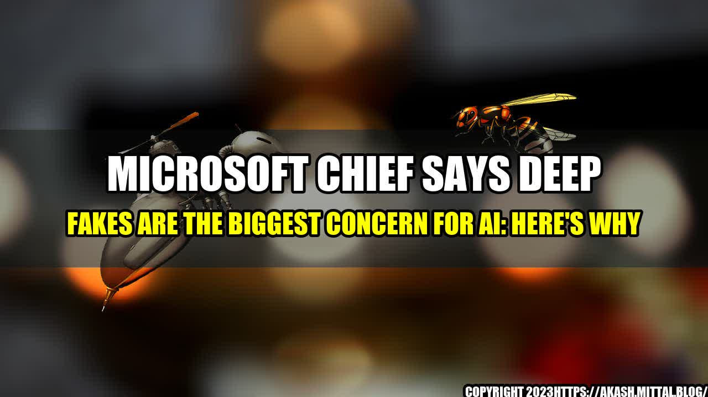

Microsoft Chief Says Deep Fakes are the Biggest Concern for AI: Here's Why

Deep fakes, or highly realistic digital depictions of false information, have become increasingly worrisome for a number of industries, including politics, entertainment, and news media. According to Microsoft's CEO, Satya Nadella, this technology poses the biggest concern for AI. In this article, we'll explore the dangers of deep fakes, provide quantifiable examples, and discuss why it's crucial to address this issue. Read on to learn more.
An Example of Deep Fakes in Action: The Jordan Peele Obama Video
In 2018, comedian and director Jordan Peele created a video that quickly went viral. The video showed former President Obama delivering a warning about the dangers of deep fakes. Only, it wasn't really Obama speaking. The video was created using artificial intelligence and a process called deep learning. Peele collaborated with a tech start-up called Buzzfeed to create an AI-generated version of Obama's voice, and then combined that with video footage of the former president that had been manipulated to match the AI-generated audio.
The result was a video that looked and sounded like Obama was saying things he had never actually said. The video was created as a warning about the dangers of deep fakes, but it also demonstrated just how convincing these fake videos can be. And, it made it clear that this technology has the potential to be extremely damaging if used for malicious purposes.
Deep Fakes
Deep fakes have already become a major concern for a number of industries, and the technology is advancing rapidly. Here are a few examples:
- Politics: In 2020, a video was circulated on social media that appeared to show Nancy Pelosi, the Speaker of the House of Representatives, slurring her speech. The video was manipulated to make it look like Pelosi was drunk or unwell, and was intended to damage her reputation. This kind of video manipulation can undermine trust in government and politicians, and is especially concerning during election cycles.
- Entertainment: Deep fakes have already been used to create fake celebrity pornographic videos, which can harm the reputation and privacy of the individuals involved. Additionally, deep fake technology could be used to create fake interviews with celebrities, or to manipulate footage from movie sets.
- News Media: Deep fakes could be used to create fake news stories or to manipulate news footage, which could undermine trust in media and damage the reputation of news organizations.
Why Addressing the Issue of Deep Fakes is Crucial
There are a few reasons why it's crucial to address the issue of deep fakes:
- Political Manipulation: Deep fakes could be used to manipulate political discourse and election outcomes. Fake videos could be used to discredit candidates or create false narratives, which could harm the democratic process.
- Misinformation: Deep fakes can be used to create false information and manipulate public opinion. This could have serious consequences for public safety, as false information could lead to panic or misguided decisions.
- Privacy: Deep fakes can be used to invade the privacy of individuals by creating fake videos or images of them. This could lead to harassment, blackmail, or other forms of exploitation.
Practical Tips for Addressing the Deep Fake Issue
Here are a few practical tips for addressing the deep fake issue:
- Regulation: Governments could create regulations around the use of deep fake technology, including guidelines around how it can be used in political campaigns, news media, and entertainment.
- Education: Educating the public about deep fakes and how to identify them could help to mitigate their impact. This could include creating public service announcements or incorporating lessons about deep fakes into school curriculum.
- Technology: Advancements in technology could be developed to detect deep fakes and prevent their creation. For example, machine learning algorithms could be used to identify subtle differences between real and fake videos.
Conclusion
Deep fakes are a growing concern for a variety of industries, and present a number of potentially serious consequences for individuals and society as a whole. However, there are steps that can be taken to mitigate the impact of this technology, including regulation, education, and technological advancements. It's crucial that we address this issue sooner rather than later, to prevent deep fakes from causing harm or undermining trust in important institutions.
Reference URLs and Hashtags
- https://www.zdnet.com/article/microsoft-chief-satya-nadella-deepfakes-are-the-biggest-ai-challenge/
#DeepFakes #AI #SatyaNadella #Microsoft
- https://www.nbcnews.com/business/business-news/big-tech-companies-are-racing-develop-tools-detect-deepfakes-n1107536
#BigTech #DeepFakes #AI #FakeNews
- https://www.wired.com/story/the-problem-with-deepfakes-according-to-ai-experts/
#DeepFakes #AI #Misinformation #Privacy
Category: AI
Curated by Team Akash.Mittal.Blog
Share on Twitter Share on LinkedIn